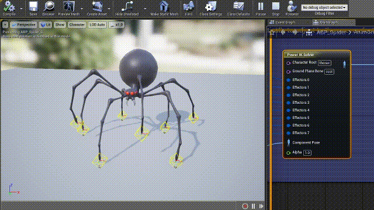
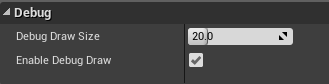
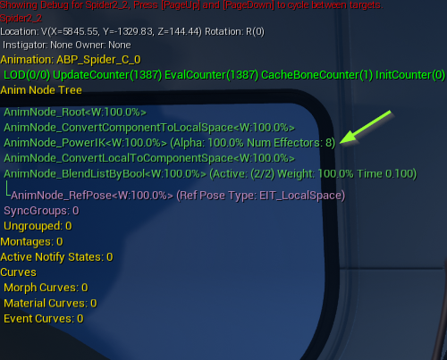

Debugging Power IK
Gaining insight into what Power IK is doing is crucial to helping you design a functional IK rig.
Anim Graph Debug View
When setting up Power IK in the Animation Graph, it will show yellow diamonds in the preview window demonstrating which bones have effectors attached to them. Select the Power IK solver node to see the debug view.

Note: If the yellow diamonds are not showing up, double-check that the bone names set correctly on the effector inputs, and that the solver is plugged into the graph (input and output pose).
The size of the debug drawing can be tuned for better visibility: 
Play In Editor Debug View
While playing in editor, hit ~ to bring up the console and execute the command:
showdebug ANIMATION
Then use the Page Up/Down to cycle through the anim instances in the scene. This provides some information about what Power IK is doing.

PowerIK draws blue diamonds on each effector, as well as a print out showing how many effectors the solver is running and their current Alpha values.